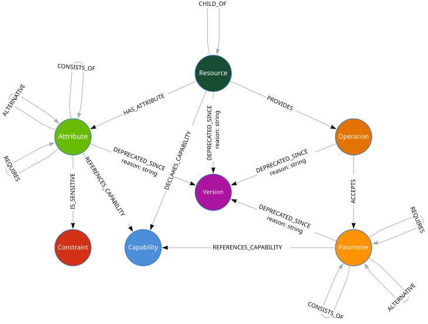

Explore the WildFly
Management Model
Ask questions about WildFly's management model from any AI agent — search, compare, and explore across versions and feature packs.
Supports all WildFly versions starting with 10, plus feature packs like AI, gRPC, GraphQL, and MyFaces.
How It Works
Model Database
The management model is stored as a graph in a Neo4j database. It contains nodes and relationships for resources, attributes, operations, capabilities, and more.

The Ecosystem
Parse the management model and store it as a Neo4j graph. Used internally by mgt — only needed for custom analysis.
- Live server or doc ZIP
- Full resource tree
- Capabilities & relationships
Orchestrate the analysis pipeline and manage model containers.
- Analyze WildFly and feature packs
- Start/stop model containers
- Browse with Neo4j (mgt browse <version>)
Explore the model from AI agents via MCP and agent skills.
- Search & browse resources
- Compare versions
- Run Cypher queries
What You Can Ask
Use natural language or the /mgt:model slash command in Claude Code. The skill also activates automatically in any MCP‑compatible agent.
- How do I add a new datasource?
- How does the logging subsystem work?
- How is TLS configured?
- Tell me more about credential stores.
- Compare the last two versions of WildFly.
- Which attributes have changed?
- Compare the undertow subsystem between WildFly 12 and now.
- Show me how stability levels are used.
- Are there any community features?
- Show me all preview resources.
- What resources have been deprecated recently?
- What resources does the AI feature pack provide?
- How is the gRPC feature pack structured?
- How do I configure the GraphQL feature pack?
Get Started
Requires Docker or Podman to run model database containers.
curl -fsSL https://model-graph-tools.github.io/mgt/install.sh | sh
brew tap hpehl/tap && brew install mgt
cargo install mgt
claude plugin marketplace add
https://github.com/model-graph-tools/claude-plugin
claude plugin install mgt@model-graph-tools
FAQ
Docker or Podman to run the model database containers. Node for the MCP server. Each version uses roughly 1.2 GB of disk space.
Yes. Each version runs in its own container, so you can start several in parallel.
Run mgt browse <version> to open the Neo4j browser, where you
can write and execute Cypher queries directly.
On quay.io/modelgraphtools/model. They are pulled automatically when you start a version for the first time.